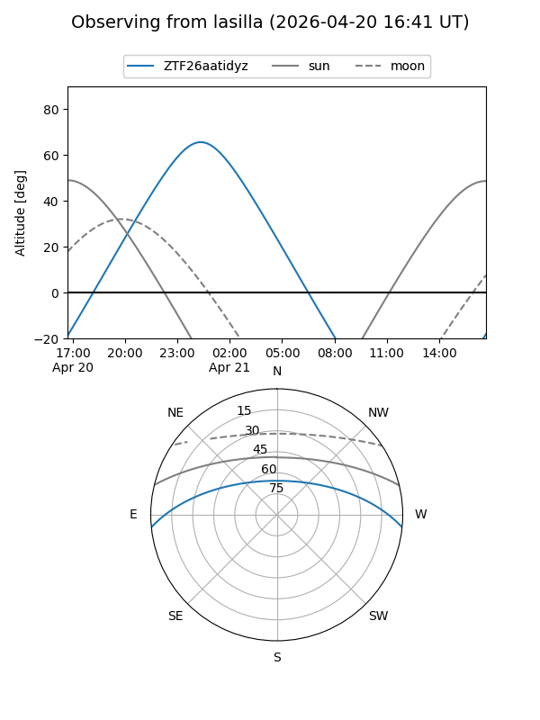
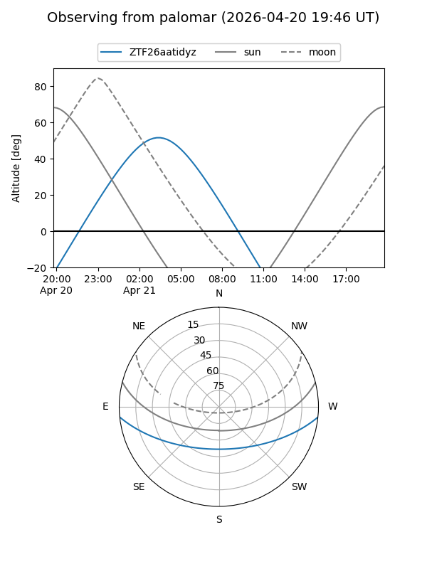

ZTF26aatidyz
Target ZTF26aatidyz at 2026-04-20 20:42
Aliases and brokers:
FINK: link
Lasair: link
ALeRCE: link
alt names
ZTF26aatidyz (ztf,fink_ztf)
Coordinates:
equatorial (ra, dec) = 143.0315,-4.83501
equatorial (HMS+DMS) = 09:32:07.56,-04:50:06.04
galactic (l, b) = (238.7346,+32.25180)
Flags:
Photometry:
last ztfg=20.01, ztfr=19.84
1 ztfg, 1 ztfr detections
Lightcurve
Visibility


Additional plots